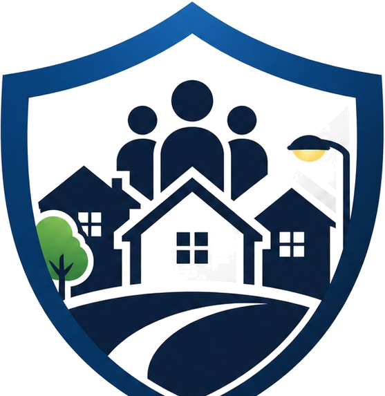

Marca la ubicacion
Haz clic en el mapa interactivo para seleccionar el lugar exacto donde ocurrio el incidente que deseas reportar.

Seguridad VecinalPlataforma comunitaria de seguridad
Una plataforma diseñada para que los vecinos reporten incidentes de seguridad en tiempo real, los visualicen en un mapa interactivo y mantengan a toda la comunidad informada y protegida.